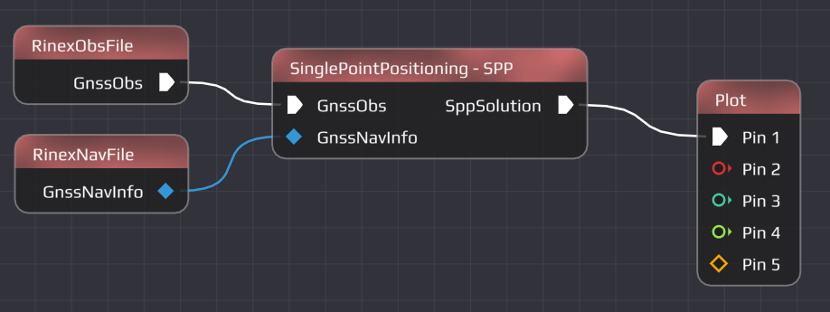
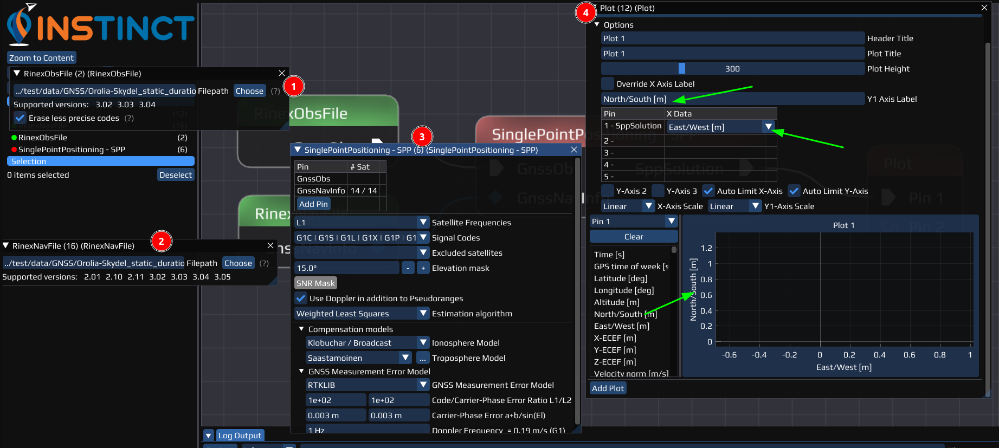
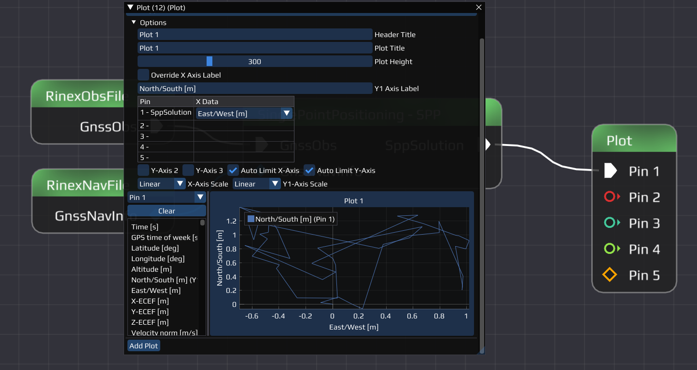

|
0.2.0
|
|
0.2.0
|
We recommend to read through the Project Introduction first!
This manual is intended for (basic) users of INSTINCT. It will explain how to work with the software and its nodes. Therefore, INSTINCT needs to be installed and started successfully. If this ins't the case, please refer to (Installation). Following this page, you will be guided through the window of INSTINCT (Main window) and the options within it, as well as using the workspace (Working with INSTINCT) to work with a flow (flow-File format). A guide for every node include a short tutorial on how to set them up can be found in the Node Guide.
When INSTINCT is started, the following window should appear on your desktop:
The window can be divided into four different sections:
To see the definition of flow-based programming, refer to (Flow-Based Programming). When you work with INSTINCT, you can use different Nodes (Node Guide) that can handle different file formats, yet everything in the workspace will be saved as a .flow-File, since INSTINCT uses flow-based programming (Flow-based Programming and INSTINCT). The flow-File saves the current Nodes, connections and settings in the workspace at the time of saving. the files can be saved and opened via the File. .flow-Files are based on JSON.
In order to work with INSTINCT, a Flow must be created (or loaded, see File). Ths happens within the Workspace. A Flow consists of Nodes and Links, the connection between the Nodes. A Node is an object (with settings) that performs a specific task (see Flow-based Programming and INSTINCT). To add Nodes, right-click to open the menu of available nodes, and choose the one of interest.
For better overview, the Nodes are sectioned and a search box is at the top. After selecting the Node, it will be added to the Workspace, where it can be selected moved around by left-clicking it. To connect Nodes, left-click and drag from one Pin to the other.
Let us build a simple Flow to calculate a SPP solution.
Required Nodes:
- RinexObsFile Node (RinexObsFile Node)
- RinexNavFile Node (RinexNavFile Node)
- SinglePointPositioning - SPP Node (SPP Node)
- Plot Node (Plot Node)
Steps
- Right-click in your Workspace to open the Menu of Nodes and search for the RinexObsFile Node under the Data Provider subsection.
- Repeat for the RinexNavFile.
- Open the Menu of Nodes again and use the search box to find the SinglePointPositioning - SPP Node.
- Left-click on the output-Pin of the RinexObsFile Node and drag it to the suitable input Pin on the SinglePointPositioning - SPP Node.
- Repeat for the RinexNavFile.
- Left-click and drag over the SinglePointPositioning - SPP Node output-Pin until + Create Node appears. Let go and select the Plot Node.
- Rearrange the Nodes by left-click and drag them for better overview. Use the Zoom to Content button in the Left Panel to center the Flow.
- Save the Flow (Main Menu Bar - File - Save or Save As)
Example of how the result should look like:

To edit a Node, double-(left)click to open the Settings Window. Here, necessary settings can be made. These include select the file that should be read-in, or select the name and directory of an output file. For data processing Nodes, the settings allow different options such as start values, different algorithm etc. Going through these settings for every Node is necessary for a Flow to work as intended.
After setting up every Node and connection, the Flow can be run (see Run).
Choose the right settings for the Nodes of our created Flow to run it.
- Note
- Only the necessary settings are described here. To learn more about each node, refer to the Node Guide or see the references in EXAMPLE 1: Build a Flow .
Required Flow:
- Flow from EXAMPLE 1: Build a Flow
Required Data:
RINEX observation file:
../test/data/GNSS/Orolia-Skydel_static_duration-4h_rate-5min_sys-GERCQIS_iono-none_tropo-none/Septentrio-PolaRx5TR.obsRINEX navigation file:
../test/data/GNSS/Orolia-Skydel_static_duration-4h_rate-5min_sys-GERCQIS_iono-none_tropo-none/Septentrio-PolaRx5TR_G.navRelative path(s), file(s) included in INSTINCT
Steps
- Double-left-click on the RinexObsFile to open the Settings Window of the Node.
- Click on choose and select the "Septentrio-PolaRx5TR.obs" File under the above given path (or copy it).
- Repeat for the RinexNavFile Node with the "Septentrio-PolaRx5TR_G.nav" for GPS.
- Open the Settings of the SinglePointPositioning - SPP and make some changes if you wish (not necessary).
- Open the Settings of the Plot Node:
- Click Add Plot
- Open the Options-Dropdown menu
- Type "North/South [m]" in the Y1 Axis Label field
- Select "East/West [m]" for X Data of the Pin 1- SppSolution in the table below
- On the left side of the plot, a list with different items is displayed:
- Drag and Drop the North/South [m] in the plot - or on the y-Axis.
- Save the Flow
Example of how the result should look like:
Run Flow:
- Close all windows except the Plot
- Run the Flow (Run - Run Flow) to see the SPP-Position over time.
Example of how the result should look like:

- Note
- To see a more advanced version of this Flow with multiple plots and satellite systems, you can find this and other example flows via File - Open Flow: _SPP.flow.
To continue learning, read our Nodes Introduction where the different Nodes with examples are explained.
Last updated: 2024-02-22